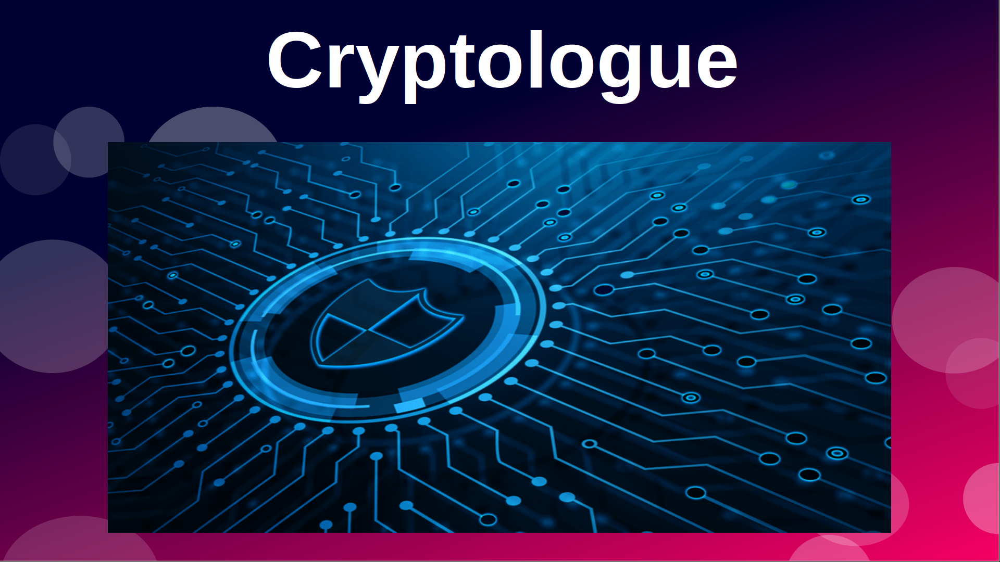
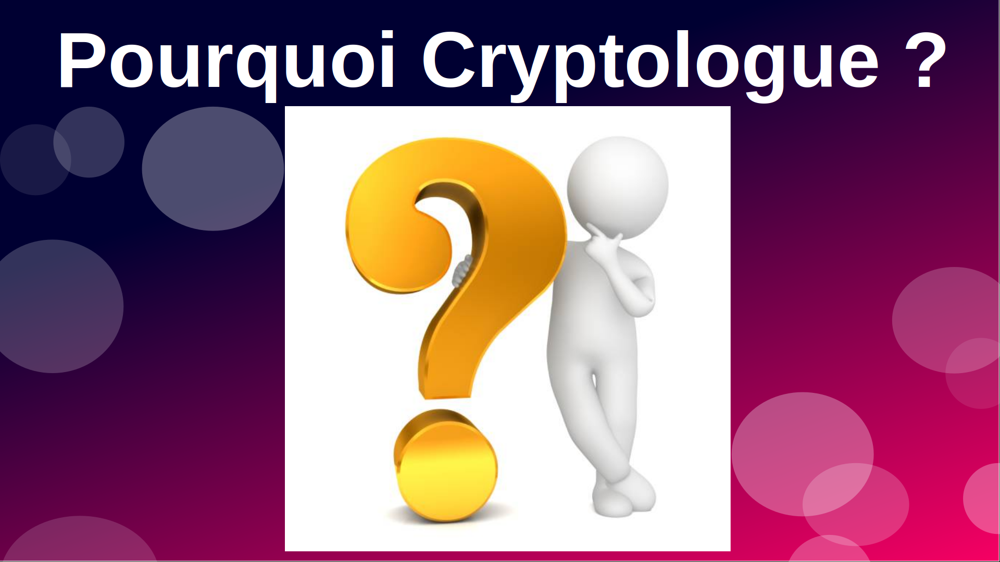
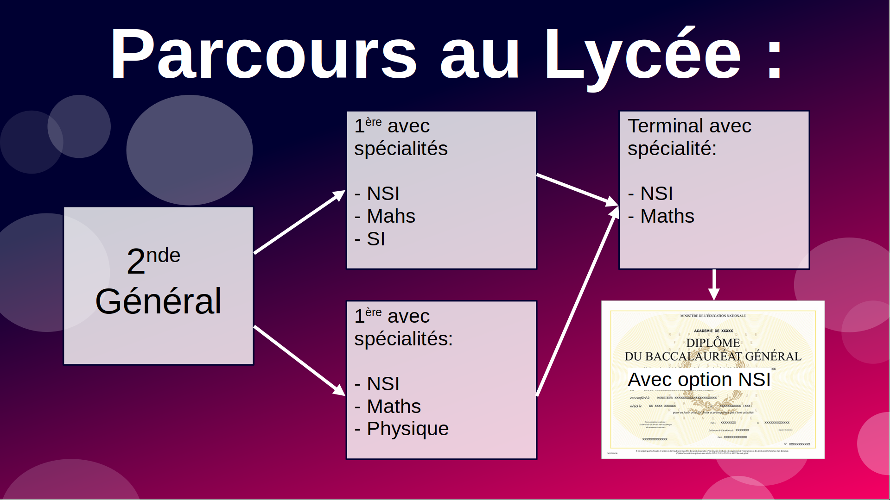
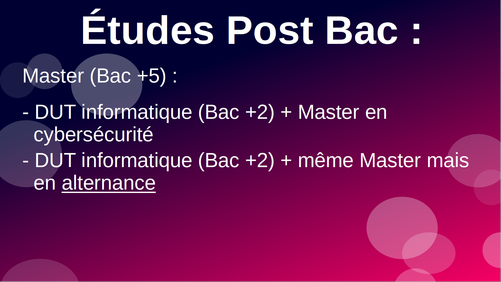

<DOCTYPE!>
<hmtl lang="fr">
    <head>
        <title>Metier de Cryptologue</title>
        <meta charset="UTF-8">
        <meta name="viewport" content="width=device-width, initial-scale=1.0">
        <link rel="stylesheet" href="assets/css/styles.css"> <!-- Utilisation du fichier CSS -->
    </head>
    <body bgcolor="#000000">
        <h1>Bienvenue sur mon site !</h1>
        <h1>Nous allons nous intéresser au metier de Cryptologue</h1>
        <br>
        <h2>Sommaire :</h2>
        <ul>
        <li><a href="#p1">I En quoi consiste le metier de Cryptologue ?</a></li>
        <li><a href="#p2">II Pourquoi choisir ce metier ?</a></li>
        <li><a href="#p3">III Le parcours au lycée (en France)</a></li>
        <li><a href="#p4">IV Le parcours post-bac (toujours en France)</a></li>
        <li><a href="#p5">V D'autres metiers proches de Cryptologue</a></li>
        <li><a href="#credits">Credits</a></li>
        </ul>
        <br>
        <h2 id="p1">En quoi consiste le metier de Cryptologue ?</h2>
        
        <p>Le metier de Cryptologue consiste a etre un expert
        en sécurité informatique. Il veille a proteger
        les données de son entreprise contre les
        hackers ou divers outils de piratage. Il doit
        donc être bon en programmation sur
        plusieurs langages de programmation, mais
        aussi en math, car il va utilise des methode
        surtout le cryptage qui sont basé sur des
        formules d’arithmétique. Il va utilise ses
        deux disciplines pour protéger les domaines
        et données de son entreprise et mettre a
        jour régulièrement les systeme pour ne pas
        laisser le temps aux hackers de trouver des
        failles.</p>
        <h2 id="p2">Pourquoi choisir ce metier ?</h2>
        
        <p>Maintenant que vous savez en quoi consiste ce metier je vais vous parlez des choix qui peuvent vous donner envi de devenir Cryptologue. Vous pouvez choisir ce metier si
        vous aimez la cryptographie comme le <i>Chiffrement de Vigenere</i> ou encore le <i>Le carre de Polybe</i> ou plus informatique comme le <i>code ASCII</i> ou <i>l AES</i>.
        Vous pouvez aussi prendre ce metier si vous aimez programmer en python, le Java, le C et le C++ ou autres, mais ceux-ci sont les principaux en cybersecurite.
        Enfin si vous aimez les deux, c'est parfait pour vous !</p>
        <h2 id="p3">Le parcours au lycee</h2>
        
        <p>Maintenant nous allons nous interesser au
        parcours au lycee.
        On commence avec une seconde générale
        avec en option SI (pas obligatoirement)
        Ensuite ont enchaine avec une premiere
        generale avec pour options : NSI et Maths et
        en troisieme option soit SI, soit specialite physique.
        On finira par une terminal general avec NSI
        et Maths en options pour obtenir un bac
        avec option NSI.</p>
        <h2 id="p4">Le parcours post bac</h2>
        
        <p>Avec ces parcours ont peu acceder a
        differentes etudes post bac, mais pour faire
        cryptologue, il faut avoir un Master en cybersecurite (Bac +5), donc choisir par
        exemple un DUT informatique (Bac +2) en allant
        dans un IUT, puis un Master avec des fac ou
        universite. Mais on peut aussi faire un
        Master en alternance (qui est a prioriser)</p>
        <h2 id="p5">D'autres metiers proches</h2>
        
        <p>Enfin si vous voulez aller dans le domaine du developpement informatique vous pouvez aussi devenir <i>Developpeur, Developpeur d'applications ou Integrateur web</i></p>

        <br><p>Merci d'avoir lu</p>
        <button onclick="alert('Bonne Journee !')">Click sur moi !</button>

        <h2 id="credits">Credits</h2>
        <p>Page web creee par Thony3ds<br>La page a ete redige sans accents pour des raisons de temps desole pour le probleme qui sera bientot corrige !<br>
        Cette page web est open source mais les droits d'auteurs originaux s applique<br>Toutes les images sont libres de droits<br>Page creer en 30 minutes<br>
        pour plus d'infos allez sur <a href="https://github.com/Thony3ds/">github.com/Thony3ds/</a></p>

        <script> <! Script JS ->
            document.addEventListener("DOMContentLoaded", function(){
    		//Code à exécuter lorsque le DOM est prêt
    		alert('Vous avez le bonjours de Thony3ds !!');
    		var username = ""
			});
        </script>
    </body>
</hmtl>